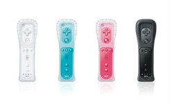

Pionnière d'une nouvelle génération de jeux, Wii fait bouger le joueur au cours d'expériences ludiques sans précédent, pour s'amuser d'une nouvelle manière.

Télécommande wii plus
La télécommande Wii Plus est la manette révolutionnaire de la console Wii. Elle intègre un capteur sensoriel et communique à distance avec le capteur
fournissant une précision et un confort d'utilisation sans précédent. Elle dispose également d'une fonction vibration et d'un haut-parleur embarqué pour
immerger encore davantage dans vos jeux préférés.
Chaque console est vendue avec une télécommande Wii Plus.
Manette classique
La manette classique reprend des éléments du design des manettes d'antan, comme celles de la NES, de la Super Nintendo et de la Nintendo 64.
La manette se connecte à la télécommande Wii via un petit câble, et la télécommande Wii Plus relie alors la manette classique à la console Wii via la connexion
sans fil.
La manette classique permet de jouer aux jeux de la console virtuelle, disponibles en téléchargement sur la chaîne boutique Wii. Certains disques de jeu Wii
peuvent aussi se jouer avec la manette classique. Il y a une indication sur le dos des boîtes de jeux Wii pour savoir s'ils sont compatibles.
Nunchuk
Le Nunchuk est un accessoire pour la télécommande Wii qui vous permet de contrôler encre différemment les jeux compatibles avec lui. En connectant le
Nunchuck à la télécommande Wii via un petit câble, vous avez accès à d'autres boutons, à un stick directionnel et à des commandes basées sur le mouvement
supplémentaires.
Avec une télécommande Wii dans une main et le Nunchuk dans l'autre, les commandes changent encore. Par exemple, dans The Legend of Zelda: Twilight Princess,
la télécommande Wii sert d'épée tandis que le Nunchuk sert de bouclier.
Wii Wheel
Mario Khart Wii s'accompagne du Wii Wheel, un volant intégrant la télécommande Wii Plus qui a donné à Mario Khart une nouvelle manière de piloter. Le Wii Wheel apporte de nouveaux défis aux habitués de la saga, tout en permettant aux novices de se mettre en selle facilement et de manière intuitive.